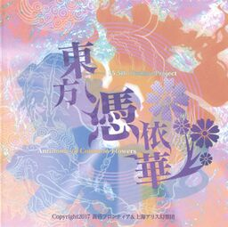

- Welcome to Touhou Wiki!
- Please register to edit. For assistance, check in with our Discord server or IRC channel.
Antinomy of Common Flowers
Antinomy of Common Flowers | |
|---|---|
|
 | |
| Developer | |
| Publisher | |
| Released |
First Trial: May 7, 2017 (Reitaisai 14) |
| Genre |
Competitive Fighting Game |
| Requirements |
OS: Windows 7 / 8 / 8.1 /10
|
Touhou
A first demo was released at the Reitaisai 14 with only 4 characters, a second demo was released at Autumn Reitaisai 4 with more characters from Urban Legend in Limbo, and the full version was released at the Comiket 93. The game was then released on Steam on January 5th, 2018. A port on the PlayStation 4 was released on May 5, 2019, while a Nintendo Switch port is on the way with no confirmed release date, making it the first official Touhou game to be released on a Nintendo console.
Contents
Gameplay[edit]
The playable characters are paired up as Master and Slave, and you can manipulate this designation at will.
The player will choose a pair of Master and Slave, and will fight together while switching between each other as a danmaku tag battle. A Slave can lend the Master her power, occasionally pull her out of a tough spot, and be disposed in times of emergency.
This game also reintroduced on-screen point collection to the fighting game genre.
Concept[edit]
The game features a similar style and gameplay to its two predecessors: Urban Legend in Limbo and Hopeless Masquerade. with continuation of the Occult system.
Name[edit]
An Antinomy is a contradiction between one law, principle, or axiom and another. The word is derived in the Greek roots antí (against, in opposition to) and nómos (law).
Story[edit]
A strange phenomenon called "Perfect Possession" is taking place. A phenomenon where one is taken over by a completely different person, not only in mind, but also in body. But have no worry: Reimu is already on her way to investigate the cause behind its occurrence.
"The strongest duo have joined forces."
"Something bad may be in store for us humans."
"An opponent impossible to defeat by anybody alone?"
Ludicrous rumors are circulating, seemingly out of the fear in human villagers' hearts.
The so-called "Urban Legend Incidents", yet to be resolved, have bestowed unsubstantiatable rumors with a tendency to manifest in concrete forms. And this time, the Perfect Possession is obviously yet another Urban Legend Incident.
This story is about those who keep watch on Perfect Possession, those who exploit it, those unwittingly dragged into it, and those working to expose the threat behind it...
Those who have made the mistake of seeing themselves as the strongest duo. This is a bittersweet story about them.
Music[edit]
Press[edit]
The game was announced by ZUN on December 11th, 2016, at the Play, Doujin! Year-End Party stream showing the name and logo of the game. The official page was created later containing a short prologue.
On April 24th, 2017, the official page was updated with a single screenshot from the game showing a duo fight, and a basic description of how the gameplay would be like.
A trial version was released on May 7th, 2017 during Reitaisai 14.
The website has also been updated to show more in-game screenshots. You can see a roster of characters including all previous characters from Urban Legend in Limbo and also 5 spaces for 4 additional characters and 1 random button.
On October 5th, 2017, an official PV was released, specifying that Ichirin and Nitori will appear in the Autumn Reitaisai 4 demo, and revealing Doremy Sweet as a new playable character.
In version 0.02, the characters selection screen's user interface changed significantly. Doremy's and the three other new playable's icon were not indicated in this version. A question mark was displayed for each of these four icons instead of the character's face. Moreover, playable characters from Touhou 14.5 had icons shaded grey and could not be selected. The random button also received it's icon displaying two crisscrossing green arrows.
Version 0.02 not only added characters, but also added a stage and stage theme. The Palanquin Ship Flies in the Sky （聖輦船空を行く） is U2's new work for the stage Treasure Ship Above the Clouds (雲上の宝船).
During the 86th edition of the Nikenme Radio show[1] on October 30th, 2017, Tasofro announced that they were preparing a Steam release for the game. It was later confirmed by an entry on Tasofro blog[2] along with their plan to release the complete version of the game at Comiket 93.
On December 18th, 2017, Tasofro revealed Tenshi Hinanawi as a playable character on their Twitter account[3].
On December 21st, 2017, Tasofro revealed Yukari Yakumo as a playable character on their Twitter account[4]
On December 27th, 2017, Tasofro announced plans for an English translation[5]. It was released in the 1.10 version of the game, on April 24th, 2018. This makes Antinomy of Common Flowers the first official game to have an official translation.
English patches[edit]
The following Touhou Community Reliant Automatic Patcher repositories provide complete translations of Antinomy of Common Flowers:
- Touhou Patch Center (http://srv.thpatch.net/)
- lang_en - Community translation from the Touhou Patch Center wiki
External Links[edit]
- Antinomy of Common Flowers official website (Japanese)
- Antinomy of Common Flowers on Steam
- Unofficial gameplay wiki
References[edit]
| |||||||||||||||||||||||||||||||||||||||||||||||||||||
| |||||||||||||